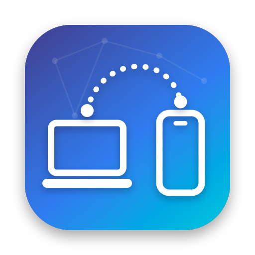
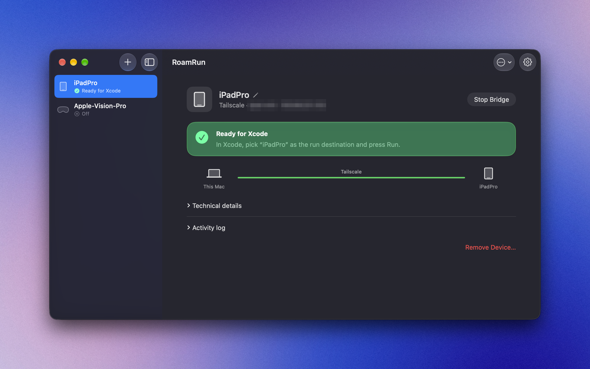

RoamRun
Run your iOS apps wherever your device is.
デバイスがどこにあっても、iOS アプリを実機で。
A macOS menu bar app that makes Xcode's wireless debugging work over Tailscale. Your iPhone, iPad or Apple Vision Pro can be on another network — a café, a hotel, your phone's tethering — and Xcode still sees it as a local device.
Xcode のワイヤレスデバッグを Tailscale 越しに使えるようにする、macOS のメニューバーアプリです。iPhone・iPad・Apple Vision Pro が別のネットワーク（カフェ、ホテル、テザリングなど）にあっても、Xcode からは手元のデバイスとして見えます。

What you get
できること
Xcode, as usual
いつもの Xcode のまま
Run, install and stop at breakpoints on a device that is miles away. No Xcode plug-ins or project changes.
遠く離れたデバイスで、実行・インストール・ブレークポイントでの停止まで。Xcode のプラグインやプロジェクトの変更は不要です。
A CLI for you and your agent
人にも AI エージェントにも CLI
roamrun up, status, run, screenshot — over SSH too. An agent skill teaches Claude Code, Codex and others how to use it.
roamrun up・status・run・screenshot を SSH 越しでも。Claude Code や Codex などに使い方を教えるスキルも入れられます。
Hands off your traffic
通信の中身には触れません
RoamRun only relays bytes; pairing and encryption stay end to end between the Mac and the device. Developer ID signed, notarized by Apple.
RoamRun はバイト列を運ぶだけで、ペアリングと暗号化は Mac とデバイスの間で完結します。Apple の公証済みです。
How it works
仕組み
- Xcode looks for devices with Bonjour on the local network. RoamRun publishes your device's record there, pointing at the Mac itself.
- Xcode connects to the Mac; RoamRun's relay accepts only connections from this Mac.
- The relay forwards the traffic to the device over Tailscale.
- Xcode は、LAN 上のデバイスを Bonjour で探します。RoamRun は、デバイスの情報を「この Mac が相手」として LAN に出します。
- Xcode は Mac 自身に接続し、RoamRun の中継がそれを受けます（この Mac からの接続だけ）。
- 中継が、その通信を Tailscale 経由でデバイスに届けます。
Install
インストール
brew install --cask mh-mobile/tap/roamrunOr download the dmg from GitHub Releases. Then add your device once in the app, while it's on the Mac's Wi‑Fi (or USB), and start a bridge. Full guide: README.
GitHub Releases から dmg をダウンロードしても構いません。インストール後、デバイスを Mac と同じ Wi‑Fi（または USB）につないだ状態でアプリから一度登録し、ブリッジを開始します。詳しくは README をどうぞ。
Requirements
必要なもの
- macOS 13 or later on Apple Silicon, with an administrator account
- Xcode, and Tailscale on both the Mac and the device
- iOS 17.4 or later; the device paired with the Mac once, with Developer Mode on
- While away, the device on some Wi‑Fi with internet access (another device's hotspot is fine; cellular alone isn't)
- Apple シリコンの Mac（macOS 13 以降）と管理者アカウント
- Xcode、Mac とデバイスの両方で Tailscale
- iOS 17.4 以降。デバイスを一度 Mac とペアリングし、デベロッパモードをオンに
- 外出先では、インターネットにつながった Wi‑Fi にデバイスを接続（別の端末のテザリング可。モバイル回線だけは不可）